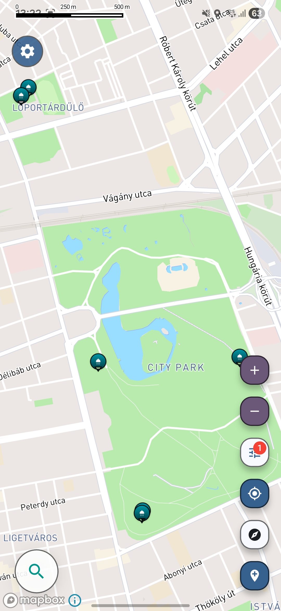

Travel utility map
Find free showers while traveling
Shower access is scattered across forums, local tips, and incomplete listings, which makes it harder to stay comfortable on the move.

Screenshot from the Voyager Maps app showing nearby free shower locations.
Why shower locations are hard to discover on the road
- Free showers for travelers are scattered across camps, public facilities, beach areas, and community spots that are hard to discover quickly.
- Backpackers, van travelers, cyclists, and road trippers often rely on fragmented advice instead of one clear place to search.
- Most major map tools do not prioritize practical hygiene stops when you are planning a longer day of travel.
Practical shower discovery built for travel days
The app helps surface curated locations for real traveler needs, making it easier to find practical places that are often missing from conventional search results. The focus stays on utility and nearby decisions.
Useful shower spots selected for practical travel use instead of broad, generic place listings.
Useful for van life, backpacking, long-distance driving, and other mobile travel routines.
Surfaces places not shown clearly on most maps when you need to freshen up during a trip.
Find more locations nearby
Open the full app experience for more shower locations around your route.
Free shower travel map for road trips, backpacking, and van life
Searching for a free shower travel solution usually starts when comfort becomes a real need, not a nice extra. On long road trips, multi-day city movement, backpacking routes, cycling journeys, or van life travel, access to showers can be surprisingly difficult to organize. Useful locations may exist nearby, but they are often spread across community posts, local recommendations, beach information, or facility listings that are not easy to check in one place.
A better free shower map helps reduce that friction by making nearby practical options easier to discover. Instead of relying only on broad map searches, travelers can look for useful shower locations with a more focused approach. Whether you want to freshen up between transit legs, plan a stop during a long drive, or keep daily routines manageable while traveling, a travel-focused shower map makes the search more practical. That is the value of free shower travel information organized around real movement and everyday traveler needs.